Page 12 · Four great moons
Jupiter’s Moons
Io, Europa, Ganymede, and Callisto are four very different worlds circling the same giant planet.
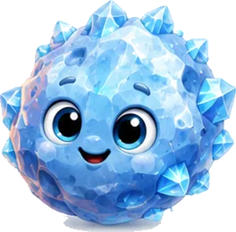
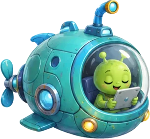
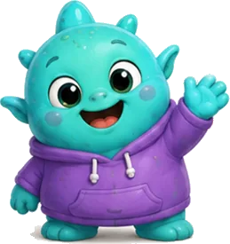
Tap a sparkling star on any page to meet a space friend and keep their sticker.
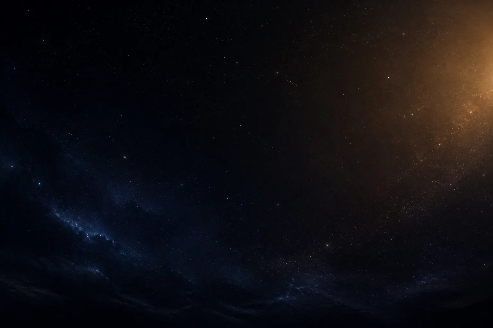
Io, Europa, Ganymede, and Callisto are four very different worlds circling the same giant planet.
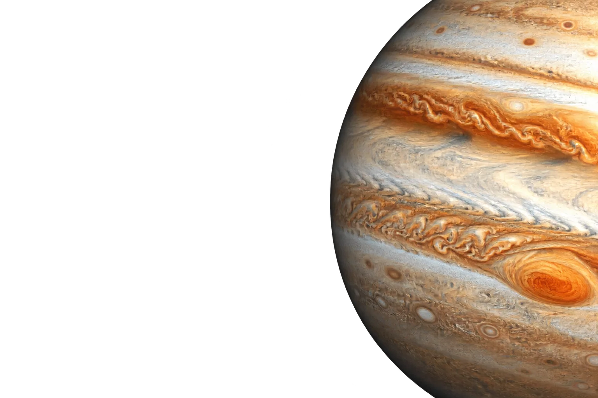
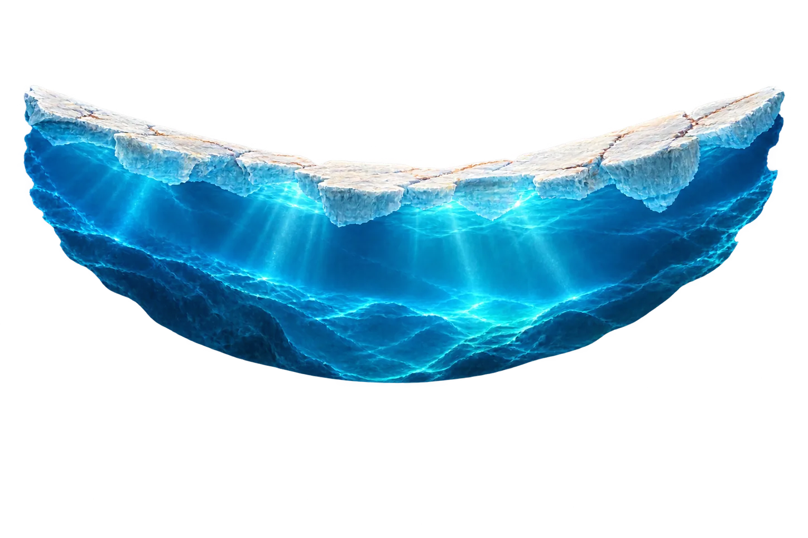
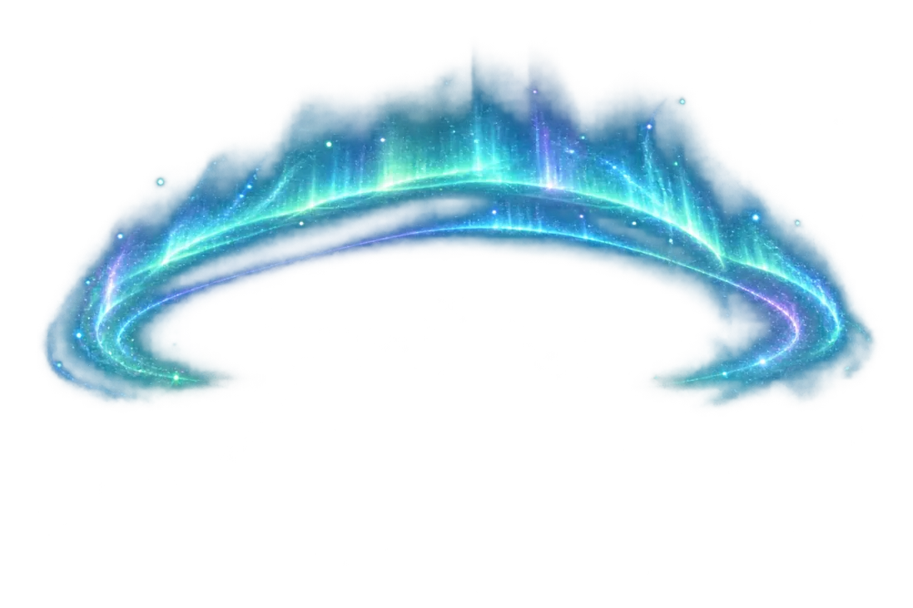
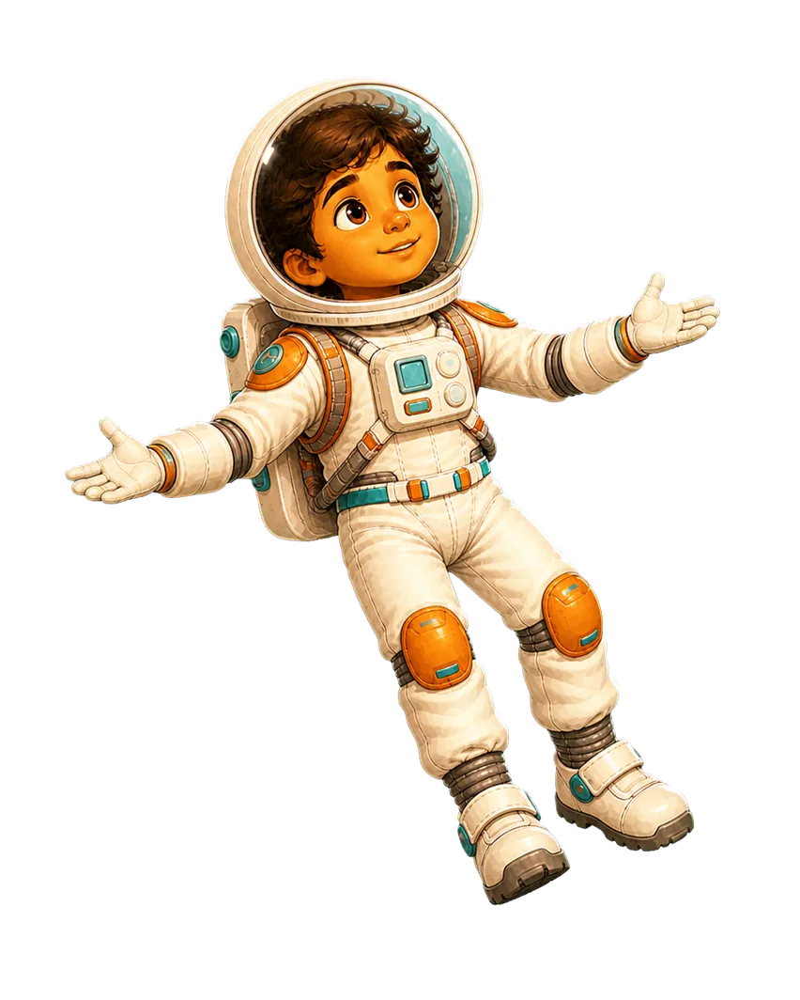
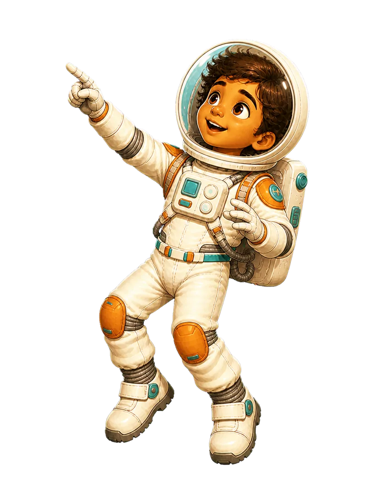
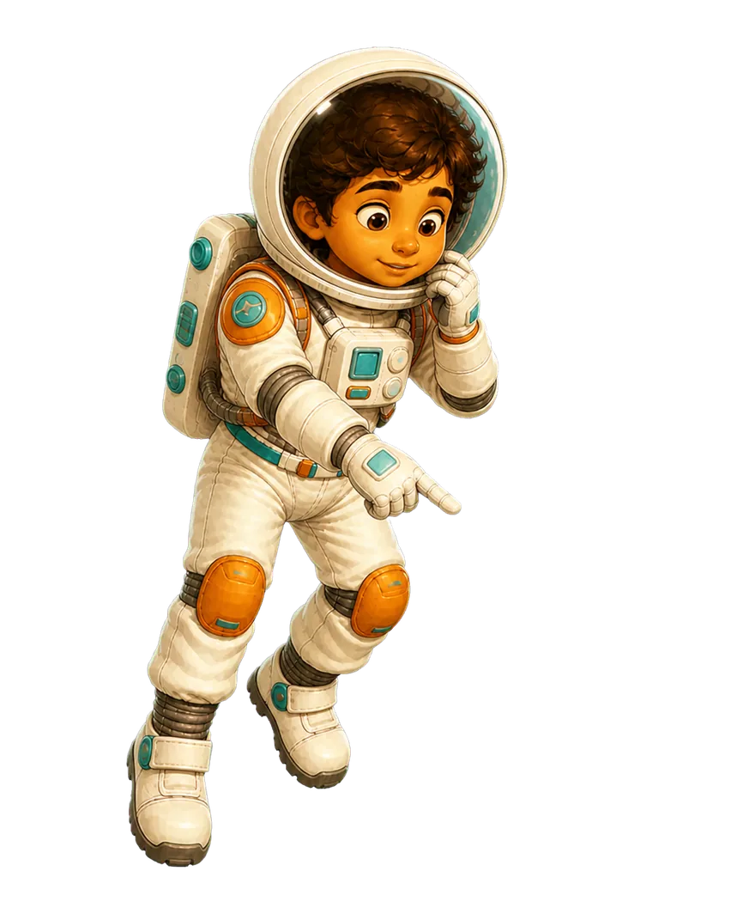
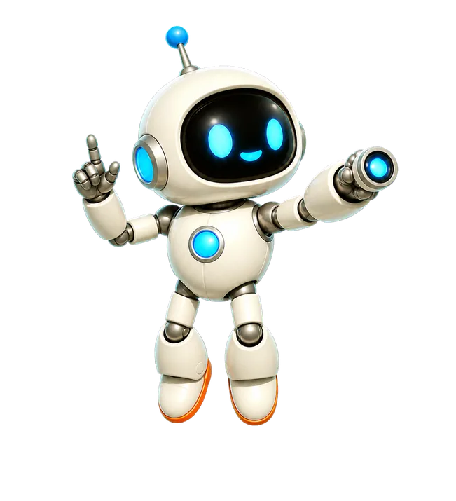
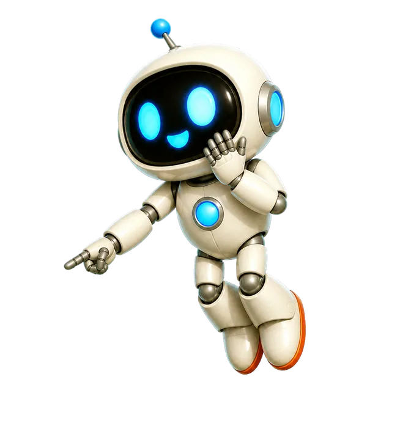
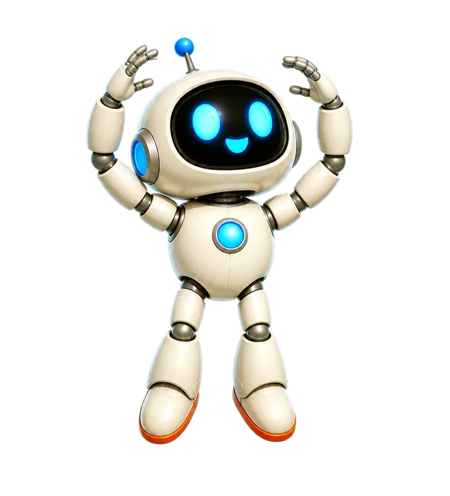
Tap the diagram to replay its motion. Illustrations are explanatory.